| ECE291 | Computer Engineering II | Lockwood, Fall 1998 |
| Purpose | 3D rendering, Floating point math, Data Structures |
| Points | 50 |
| Due Date | 5:00 P.M. Thursday, April 8 1999 |
 This MP has not yet been
assigned
This MP has not yet been
assigned
Introduction
Above you see a screen dump from the running program which shows textured polygons being rendered on the screen. The textures drawn on the polygons are in perspective. Also notice that certain polygons are placed intersecting each other. .. .. ..
In this Machine Problem you will be implementing a subset of functions that comprise the basics of perspective correct texture mapping. Your program will render polygons defined in 3-D space onto the 2-D screen. While you will be given all the necessary algorithms for drawing perspective correct texture maps, you will be expected to understand how perspective corrected texture mapping works.
Running the Program
When you first run the program, you can step through a number of test cases one at a time by hitting F12.... .. ..
The Graphics World
When creating a graphics engine, we want to be able to draw all of the objets in our world. These objects are made up of a group of polygons. Each polygon in an object is defined by a series of coordinates in 3D space. These points are connected in order to make a series of edges. The first point of the first edge must be the same as the last point of the last edge so that the polygon is closed. Each polygon may have any number of sides, and should all lie on the same plane, that is all of our polygons must be flat, but they may be oriented in any manner in space.
We can allow these polygons to look any way we want. They can have a solid color, or they can be a wire frame. We can even place a picture (usually referred to as a texture) on a polygon.
Different Ways of Viewing the World
Imagine that the computer screen is a window through which we are going to view the world. On the screen is a grid pixels, each of which is represents a sample of what is in front of us. We need to somehow decide what color each of those pixels needs to be.
In order to do this, first consider the way in which you look at things. Light comes into your eye from all directions. These rays of light are all different colors. If you trace any ray of light backwards, the color of that ray of light is the same color as the object it most recently hit.
Now there are two ways by which we can cast rays back from objects towards the screen. The first way is called an orthogonal view in which all of the rays that are cast back are parallel to one another. Usually the rays are perpendicular to the screen. While this makes the math and processing much easier, an orthogonal view does not look very appealing. If two objects are the same size, then no matter how far away they are, they both look like they are the same exact size.
The other way of casting rays back is by letting all of the rays come together at a point. This more closely mimics how all the rays of light come together towards your eye. With a perspective view of the world, everything looks in perspective. Things that are far away look like they are smaller than things that are close. Also, as you look further out, your field of view expands, while in an orthogonal view you can only see what is right in front of you.
Drawing a Textured Polygon
While it would be nice to be able to cast out rays to the screen and find where each ray intersects each object, this is an incredibly slow process. This is often done for non-time critical rendering for which we would like to get the best, most accurate image, no matter how many days it takes (yes, days) to get a few minutes worth of film. (Think Toy Story or A Bugs Life etc...)
Instead of casting rays out until we hit some object, we will instead work with each object one at a time. We are going to take advantage of two important facts about projecting images. First, all straight lines that are projected onto a flat screen always appear straight on the screen. The second fact is that convex polygons always project as convex polygons.
We will first determine where on the screen each vertex appears. Then, boundary lines which surround the object will be calculated. Once we now know where the boundaries of the object are, we will then be able to effectively fill in the rows between the edges of the polygon. This is because we know that our polygons will be convex, and row on the screen of our polygons will be unbroken by edges.
If we want to add texture mapping, we first need to realize that every pixel on the screen represents some 3D coordinates on a plane in space. Every point on each polygon is associated with some point on a texture map. So, for each pixel on the screen we need to determine the coordinates on a texture map that is associated with that pixel. This is the basic motivation behind the math that we will derive.
Each pixel's coordinates on the screen will translate into coordinates on a texture map. However, if we draw outside of the polygon boundaries, we will undoubtedly have coordinates that are not on the texture map. This will result in an access to memory off of the texture map and a memory leak.
The Z Buffer
Since we are drawing entire squares at a time, we need some way of making sure that if two squares overlap the closer one overlaps the further one. The Z buffer, stores the distance each pixel is from you. If you are about to draw in a pixel, you compare it's value to how far away the current pixel is from you. If what you are drawing is closer than what you have already drawn, then you replace the old pixel with the newer closer one, and adjust the Z buffer appropriately. If you find that the pixel which is in place is closer than the one you are about to draw, then you leave the old one there and go on.
A Few Conventions
Why is it called a Z buffer? This is due to one of a number of conventions that are used in graphics. There are a number of different types of "spaces" in graphics which are used to make it easier to manipulate objects in the world. We will mostly be concerned with Camera Space, Screen Space and Texture Space. The camera is the point from which we are looking. It is the point where all of the rays which we cast intersect. In camera space, the camera is placed at the origin, and all of the objects are given coordinates relative to the camera. Additionally, the x-axis points to the right, y-axis is pointing downward and the z-axis points directly into the screen. This is why we use a "Z" buffer. We save the camera space Z coordinate of each pixel that is drawn which tells us how far away a point is. In addition, we define that the center of the screen intersects the z axis at a distance of d. So the center of the screen is at (0,0,d). The exact choice of d doesn't matter for deriving the necessary equations, and there is a discussion about the value of d later on.
Screen space is defined quite differently from camera space. While camera space is used to define 3-D coordinates, screen space is used to define the coordinates on the screen. In screen space, the x-axis points to the right, and the y-axis points downward, but the origin is located at the top left corner of the screen. This way (0,0) is at offset 0 in video memory. Additionally, there is a 1:1 ratio between camera space lengths and screen space lengths. That is, if a line is drawn which is 10 units long with a Z distance of d in camera space, it is also 10 units long in screen space. Additionally, associated with each screen space point, there is a depth value, which is precisely the z coordinate of that point in camera space. We will derive a simple formula for going from camera space to screen space later on.

Texture space is completely 2-dimensional. Each vertex on a square is assigned one corner of a texture map. The coordinates each pixel in a texture is referred to as a texel. The coordinate system used in texture space is given using a u axis which runs horizontally, and a v axis which runs down, where the origin is located at the top left corner of the texture. There is a linear relationship between texture space coordinates and camera space coordinates, which means it is possible to linearly interpolate between the camera space coordinates of a plane and the texture space coordinates in order to choose the correct texel to display on the screen. This is discused further in later sections.
Choosing "d"
As mentioned above, d is the distance between the camera and the screen. This directly effects the field of view, depth perception, and distortion which will appear at the edges of the screen.
Your field of view is how far out you can see to either side. This is usually measured as an angle from one edge of the screen to the camera, and back to the other edge of the screen. The further back you move your camera smaller your field of view, so the less you can see out to the sides.
Your depth perception can be qualitatively measured better than it could be quantitatively measured. If you imagine that you move your camera further and further back, you would notice that the rays that you cast out toward the screen become closer and closer. As these rays become closer, they become more and more like parallel lines. As you could imagine, this makes everything look more and more like an orthogonal view. Objects which are of the same size that are far away from each other will look like they are still about the same size for large values of d.
The big disadvantage of having a small d is that there is a great deal of distortion generated near the edges of the screen. This is because for small values of d, the distance from the camera to the edge of the screen is much greater than the distance from the camera than it is from the camera to the center of the screen. When objects are projected onto a flat screen, corrections are made for the differences in distance. Therefore, since the edges of the screen are further away than the center of the screen, objects near the edge of the screen will be larger than objects at the center of the screen. The amount that edge objects are magnified is proportional to how much further away from the camera the edges are.
The problem of edge distortion can be corrected for if we assume that the screen is spherical instead of flat. On a flat screen, when you step from pixel to pixel, you move a the distance that you move across the screen is constant. On a spherical screen, when you step from pixel to pixel, the angle that you turn is constant. In this type of screen, it wouldn't matter how far away from the screen you are, only what your field of view is. This however introduces a different kind of distortion since the screen is in fact flat and not spherical. Straight lines would no longer appear straight. This is a problem as lines loose their linear relationships. As a result, we would be forced to work with trigonometric functions which would be much slower on the microprocessor than simple algebra.
By convention d is usually chosen to be equal to the height of the screen. This number may be changed however to correct for distortion or to increase the field of view if necessary.
The Math
Mathematically, we will be searching for linear relationships between the different spaces, so that we can translate screen coordinates to texture coordinates given a particular polygon's orientation. A linear relationship is one in which a constant change in one coordinate direction results in a constant change in another coordinate direction. There are two obvious linear relationships in texture mapping that are very important. First, whenever you move along any line in 3-D space, there is a linear relationship between the x, y, and z coordinates along that line. Additionally, we know that there must be a linear relationship between the camera coordinates of any polygon and the texture coordinates of that polygon.
Now we need some way to relate screen coordinates to the world coordinates. In the picture above, we have a point in camera space which we want to project onto the screen. If you notice, by similar triangles, we can get the following equations:
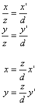
Recall that screen coordinates are centered on the upper left hand corner of the screen. Assuming that the resolution of the screen is 640x480, the following equations can be used to translate camera space coordinates into screen coordinates.
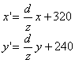
Linear Relationships Between Screen Space and Camera Space
In order to draw efficiently to the screen, it is important to find a linear relationship between points in camera space and points on the screen. Our algorithm renders points along straight lines on the screen. Straight lines in screen space correspond to straight lines in camera space. As it turns out, there is a linear relationship between the inverse of the z coordinate in camera space and coordinates in screen space as one traces along a straight line. To find this relationship, we will start with the equation of a straight line in camera space:
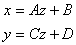
With some substitution, we can determine an eqation relating how the z coordinate for this line relates to screen coordinates.
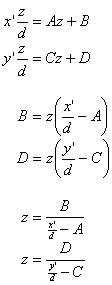
This is a non-linear equation relating z to the screen coordinates. While z is non-linear, we will see that 1/z is linear with respect to screen coordinates as follows:
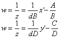
We don't have to know what A, B, C or D are for the lines which we are traveling along. All we need to know is that since 1/z varys linearly with x' and y' independently, we can linearly interpolate between the two endpoints of the line with respect to 1/z. From now on, for simplicity, 1/z will be referred to as w, which is consistent with conventions used in graphics programming.
Linear Interpolation and Cramer's Rule
Linear interpolation will be used in this MP to calculate the points between two endpoints of a line, (x'0, y'0, w0) and (x'1, y'1, w1). For instance, if you specify a w value, linear interpolation allows you to find the x and y coordinates of the point that has that w value and lies on the line connecting the two specified endpoints.
In order to linearly interpolate, you need to first be sure that you are dealing with data that is related in by a linear equation. We just proved that if you move along any line in space x' and w (or 1/z) are linearly related, as are y' and w. It is easy to see that as you move along a straight line on the screen x' and y' are also linearly related, so we are all set to start interpolating.
Since we will be linearly interpolating along a plane instead of a line, we will need to start off with three points instead of two. We can simply choose 3 points from our square in space. Each square is already defined with 4 x, y and z coordinates, so getting 3 x, y and w coordinates is easy. Once you have your three points (x'0, y'0, w0), (x'1, y'1, w1) and (x'2, y'2, w2), we note that we are trying to find an equation that looks like the following:
This is simply a linear equation in two unknowns. We So we just need to calculate two sets of delta's, and plug the equations into Cramers rule as follows:
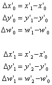
Placing the coefficients into matrix form, we get the following:
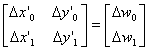
This can then be solved using Cramer's rule as follows:
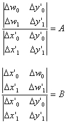
Recall that:
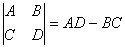
The coefficient A can be thought of as a delta(w)/delta(x') term. That is, for each unit change in the screen coordinate, it is the amount w changes. Similarly, B can be thought of as delta(w)/delta(y').
With these coefficients, we can now move from pixel to pixel knowing the exact z coordinate of each as we go along. Since we are already given the exact x, y and z coordinate of each vertex, we can have a starting point from which to work off of. Each time we move a pixel in the x' direction, we just add A to w. If we move in the y' direction, we just add B to w. We can also save the values A+B and A-B for moving along the diagonal by 1 pixel to speed up the floating point calculations. If either of the denominators turns out to be 0, we don't have to worry about it. It simply means the line lies along a plane which intersects the origin, and we will never be moving off that plane to need to worry about the infinite change in w which would result.
Using Interpolation in Texture Space
It was noted before that there is a linear relationship between camera space and texture space. There is also a linear relationship between (screen space coordinates)/z and camera space. This implies that there is a linear relationship between (texture space)/z and screen space. You could therefore write a set of equations as follows:
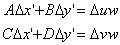
These two equations expand into 2 pairs of equations, each with 2 unknowns after calculating the correct initial conditions. The results are as follows:
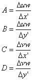
Recall that w = 1/z.
We can then solve for this using Cramer's Rule as above. We can easily calculate uw and vw for three of the vertices on a square. We then calculate the screen x' and y' coordinates of each of those points in order to get the deltas. Then, once we have all of the necessary coefficients, we can calculate differentials which we need to interpolate the plane. Once we have the vw, uw and w coordinate for a pixel, we can divide the uw and vw terms by w to get u and v, the coordinates in the texture map of the texel that we want to use to draw to the screen.
As you see, when drawing a polygon to the screen, we will never actually calculate the z value for any pixel. Instead, we will be dealing with only w. As a result of this, we will not be using a z buffer for this MP since that would require an extra calculation. Instead, we will use a w buffer. Since w is exactly 1/z, objects that are closer to us will always have a smaller z and therefore a larger w. Also, you may note that because of the nature of floating point numbers, they can be compared using the integer unit as long as at most one of the numbers being compared is negative. This is fine for us since we will never draw a pixel with a negative value of w (or z) for this would indicate that the polygon being drawn is behind the camera.
Walking on Edge
We need to determine what points are within a polygon. To do this, we will perform the task of edge walking. From the edges, we will want to determine the leftmost and rightmost pixel on each line that is within the polygon that we are drawing. To keep track of this, we will maintain two tables in memory, MinTable and MaxTable. Each table will have one entry per row, or y' coordinate on the screen, so we will not need to record this value in the table. We will want to keep track of the texture coordinates of these edge points, as well as the w coordinate so that we can fill in the polygon on the line. So, each table entry needs to save the x' coordinate of the pixel we are referring to, as well as the uw coordinate of the point, the vw coordinate of the point and the w coordinate of the point.
Since edges are straight lines between two points, we need to begin with the coordinates of the two endpoints of the line. Since we will also be keeping track of the texture coordinates of corresponding to each pixel along the edge, we will need the texture coordinates of the endpoints. Additionally, since we are trying to stay inside of the triangle that we are going to draw, we need to know which side of the line we need to stay on. When we walk along an edge, no matter what the slope is, we will either use the pixel that is to the right of the line, or to the left of the line. There is a slight ambiguity as to what to do with points that lie directly on a line. By convention, if the line is at the top or left side of a polygon, we will fill in pixels that lie directly on the line. So, if we are staying to the right of a line, we will also fill in pixels that lie directly on the line. Also, if an endpoint of a line lies exactly on a pixel at the top of the line, we will also fill in that pixel. This means that for lines that we are to stay to the left of, we will not fill in pixels that lie directly on the line. Additionally, for pixels that lie exactly at the endpoint of the bottom of a line, we will not fill in the pixel.
Thee are a number of special cases which should be addressed. For instance, if there is a horizontal edge, there is no way to stay either on the left or the right side of the line. We can simply ignore any horizontal edges. The endpoints of each edge is connected to the endpoint of another edge. If two adjacent edges are horizontal, then the polygon is being viewed on edge and you can't see it (polygons are 2 dimensional). If the adjacent edges are not horizontal, then they will take care of the horizontal endpoints of the line. This is all we are interested in getting anyway.
Another special case is when polygons are only one pixel wide. This can be solved by looking at what happens to the min and max tables when you fill in values for a polygon that is less than 1 pixel wide. When we fill in the tables, for any given edge, we will only adjust one table. If it is a right edge, we will fill in the MaxTable, if it is a left edge, we will fill in the MinTable. For thin polygons the right edge points will be on the left of the right edge points. As a result, the values for a given scanline will have a smaller Max value than Min value. This is going to be our condition for not drawing anything on a line. Incidentally, if the Min and Max values are equal, then you have to draw exactly one pixel for the scanline.
One other special case to be concerned about about is edges that are less than one pixel tall. This is similar to the case of a horizontal line. We will be filling edges from a point that is at or below the top of the line down to a point that is above the bottom of the line. If there is no integer coordinate that lies between these two heights, we will do nothing.
A final worry is edge clipping. What to do with polygons that go off the edge? To start with, you can easily determine if a line is entirely above the top of the screen or entirely below the bottom of the screen, in which case the entire line can be ignored. If only part of an edge extends beyond the top or bottom edge of the screen, we will simply jump to the correct point on that edge that is within the screen height. If a left edge is too far to the left, we will fill in the edge table as usually, even though the coordinate is off the screen. Clipping off the sides of the screen will be handled in scan line filling.
In preparing to walk an edge, we will parameterize the lines on the boundaries in terms of a point slope form. You are probably used to seeing the equation y = mx + b. Since we will want to be able to walk along the line in the y direction, the lines will have to be parameterized in the form x' = my' + b. The slope of the line (m) is simply the change in x' divided by the change in y'. If you then use the coordinates of one of the endpoints, it is easy to solve for b using Cramers rule as follows:

Once we have found an equation of a line, we can determine if this line is on the left or right side of the polygon by determining if any of the other vertices in the polygon are on the left or right side of the polygon. This is relatively easy. If we just put in the y coordinate of another vertex of the polygon into our slope-intercept equation, we can compare the resulting x value with the x value of the vertex. If the third vertex has a higher x coordinate, the line is on the left edge of the polygon. If the vertex has a lower x coordinate, the line is on the right side of the polygon. If they happen to be equal, then all of the vertices will be along the same line. This means that we can draw nothing for this polygon since the polygon is being viewed on edge, and 2 dimensional objects cannot be seen on edge. When walking along a left edge, you only want to fill in the MinTable for coordinates that lie on the right side of the line, or coordinates that lie directly on the line. When walking along a right edge, you only want to fill in the MaxTable for coordinates on the left side of the edge. Also remember that you want to start with any pixel that is at or below the top of the line (the top of the line is the point with the smallest y' coordinate) and you want to stop at the pixel that is above the bottom of the line.
In order to stay strictly on one side of the line, you must remember that the FPU by default will round numbers before popping them off of the stack. This however can be adjusted using the FPUs control register. If you set the FPU to truncate, rather than round, then the number that is returned will always be less than or equal to the actual floating point value. This is useful for staying on the left side of the line. If you add one to this value, you will get an x coordinate which is strictly to the right of the line.
Once you have determined the X coordinate that you want to put into the table, you need to determine the other values that go into the table entry. These values include the W, UW, and VW coordinates. From a single global reference point, we can determine these coordinates for any point on the screen using the defined differentials. Remember that not only is the initial global reference point a valid point to reference off of, but any calculated value in the MinTable or MaxTable are valid reference points. This fact can be used to optimize the process of moving along a line.
When you draw a straight line, you will always move either up or down by exactly 1 pixel, and you will always be moving left or right by m or m+1 pixels where the absolute value of the slope of the line (rounded down) is m. This means that after you have calculated the first point along a line, you simply need to determine if you have moved over by m or m+1 pixels when you have moved up/down by one pixel. This will determine how much you will need to add to the previous TableEntry values.
Texture Mapping
Now that we know the endpoints of each scanline, we can fill in the polygon one line at a time. For each scanline, we need to look at the values in the MinTable and the MaxTable which we built. If the value of the X position in the MinTable is less greater than the value of the X position of the MaxTable, then we want to draw nothing for this particular scanline. Additionally, if both X values are either to the left of the screen (having negative coordinates) or if they both are to the right of the screen (having a coordinate greater than or equal to 640) we will also draw nothing.
Next, if the left endpoint of the line is to the left of the screen, and/or if the right endpoint of the line is to the right of the screen, it is necessary to adjust these endpoints so that they are on the edge of the screen. Since global constants have been defined telling you how each of the TableEntrys values need to be adjusted for each pixel that that is moved from the end, you can easily multiply these values by the number of pixels that you have to adjust the endpoint by, and add/subtract this value from the endpoint value to get a value that is on the screen.
Now that the endpoints are on the screen, you need to start off from the X position from the MinTable and work your way to the X position from the MaxTable. For the first pixel, you need to first compare the W value against the W buffer. If the pixel that you are drawing is not closer than what is already on the screen, then you will simply move on to the next pixel. Otherwise, you will divide the UW and VW coordinates by W to get the U and V texture coordinates from the texture in memory. By rounding to the nearest texel, you can pick out from the texture the correct color for that particular point on the screen. Once this color has been retrieved, you can put this to the color onto the screen where it goes, and adjust the W buffer with the value of W at this point.
For each step that is taken, each of the values W, UW, and VW needs to be adjusted by a factor of (dw/dx), (duw/dx) and (dvw/dx) respectively. You can then determine if this point should be drawn, and then draw it if appropriate, working your way across the scanline until you reach the X coordinate that was stored in the MaxTabe.
---------------------------------------------------------------------------
For more information, please read over the five articles on texture mapping
that can be found at the following page:
http://www.d6.com/users/checker/misctech.htm
You can find in addition to more information on basic texture mapping, a
great deal of information on optimizing your code for a polygon engine.
-------------------------------------------------------------------------------
Four Sided Textures
What will be passed to your procedure will be a pointer to a special structure which completely describes the square you are going to draw. There is a set of 4 Points. Each point is a set of 3 Real4s that are the coordinates of each vertex in camera space. This is followed by a set of 4 TexturePoints. Each Texture point is a set of two DWORDs. These are the u and v coordinates of each vertex in texture space. Additionally, there is an extra DWORD which is a texture index used to get information about the texture which is to be mapped onto this polygon. The needed information can be gotten by making calls to several free library functions that have been defined for you.
A Review of the Rendering Pipeline
After initializing, the first thing that we will do is translate the world coordinates of the vertices into screen coordinates. Additional coordinates of uw, vw and w for each vertex needs to be calculated. Since we will not need to know the value of z itself, for each vertex we will be generating a set of 5 coordinates (x', y', uw, vw, w). These coordinates can be calculated using the equations that have been summarized below using the information that has been given to you.
Next we need to do a do some precalulations. We need to determine all of the delta's which were discussed above (d(w)/d(x'), d(w)/d(y'), d(uw)/d(x'), d(vw)/d(x'), d(uw)/d(y'), d(vw)/d(x')). With these values, once we calculate the exact (uw, vw, w) for a single point on the screen, we can easily calculate these values for every point on the screen within a polygon.
Now that we have these floating point coordinates we need to snap the endpoints to the grid of integer coordinates on the screen. This only needs to be done for the first vertex of the polygon. This is needed because we can only draw points at the centers of pixels. So we will create a special point to reference from.
Next we need to start walking along the edges of the polygon to create an outline. For each pixel along the each edge we will fill in entries in the MinTable or MaxTable. These two tables allow us to determine the left-most and right most pixel on any scanline. Finally we need to walk straight across each scanline, from the leftmost pixel to the rightmost pixel filling in the texture.
Protected Mode
This program is being written as a Win32 application. This means that we are now working in Protected Mode as opposed to Real Mode as in previous MPs. There are many important differences between these two modes of programming.
In protected mode, the segment registers take on an entirely different meaning. Rather the registers themselves now hold information called a selector. The selector is a pointer to information in the descriptor table. The descriptor table holds such information as where the segment starts that you are accessing, how large it is, if you have permission to read/write to that segment, and what type of segment it is. You will not need to concern yourself with the details of how selectors and descriptors work, but you should be aware of them, so as to know that you may not change the segment registers as you normally could in real mode.
In the Win32 environment, we will be using the flat model. This means that all of the segments will be loaded with what is known as zero selectors. In other words, each of the selectors will point to descriptors that start at the beginning of memory, and you will be able to access any point in memory by simply addressing it's linear address. Memory is also addressed using 32 bit registers, rather than 16 bit registers. This means you should use EBX where you used BX previously.
We will also allow you to write code using 586 opcodes. This means that you may use any opcodes that the Intel Pentium can handle, but you may not use MMX instructions. (This would be the .686 model, and the computers in the lab cannot execute MMX instructions). In the 586 instruction set, you may now do many things that you couldn't before. First note that the loop opcode is performed with ECX as a counter rather than CX. You can now shift by a constant greater than 1 in a single clock cycle. Also, with the new memory addressing modes, you can now address memory by adding any two general purpose registers together, a constant, and you may multiply one of the two registers by 1, 2, 4 or 8. You may also push or pop variables to the stack. A few examples of what you may now do are listed below:
shl AX, 4 mov EAX, [ESI] add EAX, [ECX] sub ESI, MyVariable.[EAX + EDX * 8 + 01234h]
Structures
Structures will be used extensively in this MP. Structures are user-defined type definitions for data more complex the basic data types: float, byte, word, etc. Structures are defined in MASM like so:
structurename STRUCT substructdata1 datatype initializer substructdata2 datatype initializer structurename ENDS
where structurename is the name for the structure being defined, and substructdata? are the data types from which the structures are comprised. Structures can be comprised of the basic data types i.e., REAL4, DW, DB, etc, or of other previously defined. See the code for examples.
Structures are accessed by the . operator. So in order to access or refer to substructdata1 of our example structure, assuming we have instanceated a variable of structurename type, we do :
Data1.substructdata1
Where Data1 is our instance of substructure
Structures, whether instances of a structure of part of another structure, are initialized using <.. , .. , ..>. The commas within the angle brackets separate the initial values for the structure. ? is always an acceptable initializer for the basic datatypes (REAL4, dw, db, etc). See the MP4 variable definitions for examples.
Pointers
In this MP, most of the C-type procedures take pointers to data instead of data itself. The parameters are word size values which are the offsets to the data passed into the procedures. When accessing data via pointers the assembler needs to know what kind of data the pointers point to so the offset into the structure can be calculated appropriately. For example, if a procedure takes as one of it's parameters, PTR1 -- which is a dword that points to an instance of our example structure -- in order to access substructdata1 of the pointer (for loading it into the fpu stack if it's a REAL4, for example) we would do this:
mov esi, PTR1
fld [esi].structurename.substructdata1
The .structurename part of the code tells the assembler that we are accessing a structure of type structurename. With this in mind the assembler can determine how far to index into the structure to retrieve structurename. In this case, since substructdata1 is of type REAL4 -- which is 4 bytes long -- the assembler generates the appropriate code to access substructdata1.
Accessing data by pointers can introduce a whole category of bugs. BE VERY CAREFUL WHEN accessing memory, use the as many temporary Buffer variables as possible (we have provided plenty) to store intermediate data. Memory leaks (inadvertently writing to data in memory) are a common set back.
In order to keep all of the data in order, this MP will heavily depend upon various structures.
A point in [world/camera/object] space.
Point STRUCT
X Real4 ?
Y Real4 ?
Z Real4 ?
Point ENDS
A point in texture space.
TextPoint STRUCT
U DWORD ?
V DWORD ?
TextPoint ENDS
The data associated with the endpoint of a line. This includes the screen coordinates of the point, as well as the information needed for texture mapping (UW and VW) as well as the W coordinate which is needed for W buffering as well as texture mapping.
EndPoint STRUCT
X Real4 ?
Y Real4 ?
UW Real4 ?
VW Real4 ?
W Real4 ?
EndPoint ENDS
A polygon V1 is the vertex which is nailed to a texture whose index is TextureIndex, at coordinates T1, V2 is nailed down at T2...
Polygon STRUCT
V1 Point
V2 Point
V3 Point
V4 Point
T1 TextPoint
T2 TextPoint
T3 TextPoint
T4 TextPoint
TextureIndex dd ?
Polygon ENDS
An entry in either the MinTable or MaxTable.
TableEntry STRUCT
UW Real4 ?
VW Real4 ?
W Real4 ?
X dd ?
TableEntry ENDS
A two by two matrix to help with Cramer's law calculations.
Matrix2_2 STRUCT
M00 real4 ?
M01 real4 ?
M10 real4 ?
M11 real4 ?
Matrix2_2 ENDS
There are a number of variables that have been defined for you. You may define any additional variables as you like, however, in order for the library procedures to work properly, these variables must be filled with the appropriate data.
A pointer to the texture of the polygon that you are currently drawing.
CurrTexturePtr dd ?
The height of the current texture being drawn.
CurrTextureHeight dd ?
The width of the current texture being drawn.
CurrTextureWidth dd ?
The endpoints for the current polygon being drawn.
CurrEnd1 Endpoint <?,?,?,?,?>
CurrEnd2 Endpoint <?,?,?,?,?>
CurrEnd3 Endpoint <?,?,?,?,?>
CurrEnd4 Endpoint <?,?,?,?,?>
These are the differentials which need to be calculated before starting
to draw a texture.
dwdx real4 ?
dwdy real4 ?
duwdx real4 ?
duwdy real4 ?
dvwdx real4 ?
dvwdy real4 ?
The min and max tables that need to be filled in order to fill a polygon
on the screen.
MinTable TableEntry 480 dup(<?,?,?,?>)
MaxTable TableEntry 480 dup(<?,?,?,?>)
A reference point with integer screen coordinates.
RefX dd ?
RefY dd ?
RefUW Real4 ?
RefVW Real4 ?
RefW Real4 ?
The W buffer
WBuffer Real4 640 * 480 dup(?)
The following are procedures that have been written in C++ that you may may use to help you program your MP. You are free to use any of these procedures without point deductions. You may want to use the invoke command from MASM which will automatically push function parameters to the stack for you, as well as clean up the stack after the function call. For example, the following two bits of code are equivalent.
invoke fooFunction, BX, CX
push CX push BX call fooFunction add SP, 4
It is important that you do not use AX as an input to a function since MASM may generate code which will use AX to push variables to the stack. Due to this fact, AX may not necessarily be preserved across a function call.
dprintf proto C
pszFormat : DWORD,
OtherArgs : VARARG
Example:
TestNumberMsg db 'TestNumber = %i', 0Dh, 0Ah, 0
TestNumber dw TestNumber
...
...
invoke dpritnf, offset TestNumberMsg, offset TestNumber
The dprintf function works in exactly the same way as C's printf. The difference is that dprintf uses Win32's debug output services. This means that in order to see the output of dprintf, you must either run the program under a debugger or use a program such as DebugView (link). Just as in C, dprintf expects zero-terminated strings.
GetTime proto C
GetTime returns the number of milliseconds elapsed since Windows was started. The value is returned in EAX as is the C convention.
PageFlip proto C
If your program is in windowed mode, you will be rendering to a buffer in main memory. You will need PageFlip to copy the buffer to the screen. If your program is in full screen mode, you will be rendering directly to a page in video memory. PageFlip will flip pages so that the page you are currently rendering to is displayed on screen.
The PageFlip function is only useful for debugging in windowed mode. This function will draw the contents of the back buffer into the window's region on the screen. This way, if you are debugging, you can draw a few things into the back buffer and then call PageFlip followed by WaitForF12 to see what you've drawn up to that point. Noted that PageFlip is automatically called by the framework when you return from RenderFrame.
TxGetTextureInfo proto C
dwIndex : DWORD,
pdwWidth : DWORD,
pdwHeight : DWORD,
ppImageData : DWORD
The TxGetTextureInfo function returns all information about a given texture index. You pass the function a texture index in dwIndex and pointers to three DWORDs (pdwWidth, pdwHeight, ppImageData) in memory and it will fill in the requested information. After calling TxGetTextureInfo, the memory pointed to by pdwWidth will contain the width of the texture. The memory pointed to by pdwHeight will contain the height of the texture, and the memory pointed to by ppImageData will contain a pointer to the upper-left- hand corner of the texture. The texture data is in the 32 bit format
TxGetTextureDataPtr proto C
dwIndex : DWORD,
ppImageData : DWORD
TxGetTextureDataPtr is identical to TxGetTextureInfo, but only fills in a pointer to the pixel information of the specified texture.
TxGetTextureHeight proto C
dwIndex : DWORD,
pdwHeight : DWORD
TxGetTextureHeight is identical to TxGetTextureInfo, but only fills in the height of the specified texture.
TxGetTextureWidth proto C
dwIndex : DWORD,
pdwWidth : DWORD
TxGetTextureWidth is identical to TxGetTextureInfo, but only fills in the width of the specified texture.
WaitForF12 proto C
The WaitForF12 function also is only useful for debugging in windowed mode. This function will cause MPBase to pause, waiting for the user to press F12.